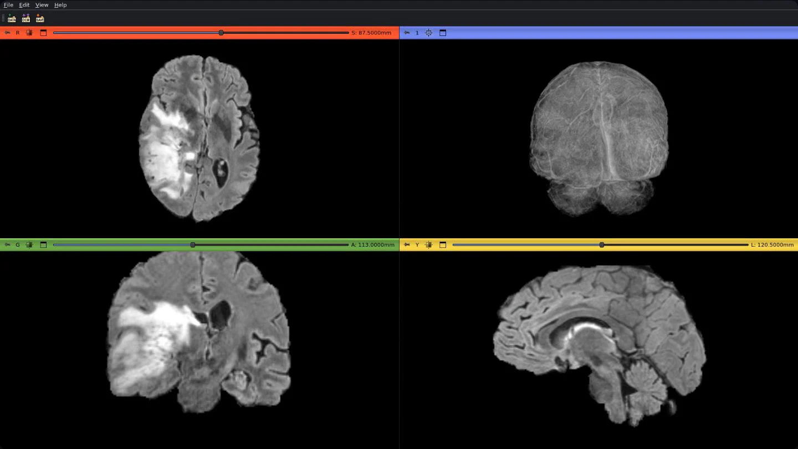
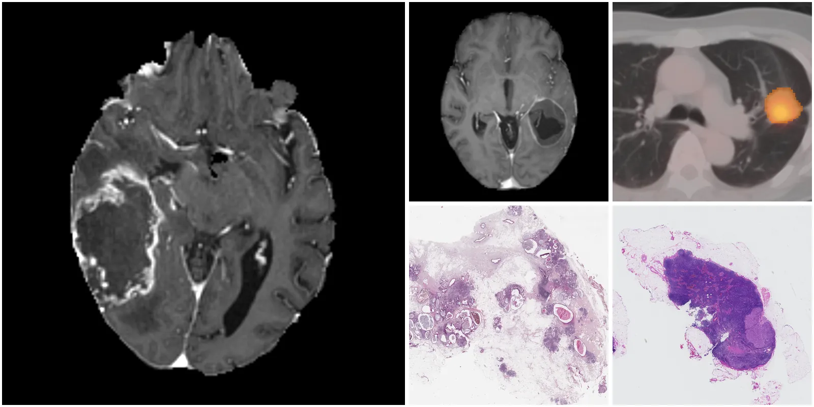

MedOpenClaw
RuntimeA runtime for agents to operate 3D Slicer and QuPath on complete radiology studies and whole-slide images. Every action can be replayed.
View MedOpenClawWe develop AI agents that work inside clinical software and record the evidence behind every result.
A research initiative at the Technical University of Munich.
Map the vessels around this tumour. Is any major vessel encased or displaced?
Watch the agent at workAgent run on UCSF-PDGM-0036 in 3D Slicer, using a contrast-enhanced T1 MRI. Research use only.
Much of the work in clinical practice and medical research happens in software: reading imaging studies, measuring findings, comparing them with earlier examinations and writing up the result. Many of these steps are still done by hand.
MedCUA studies computer-use agents that carry out such steps in the tools clinicians already use, and that report every action and its evidence so another expert can check the result. Our long-term aim is MedCopilot, an assistant that works alongside clinicians inside their software.
From operating medical software to evaluating the evidence behind an answer.

A runtime for agents to operate 3D Slicer and QuPath on complete radiology studies and whole-slide images. Every action can be replayed.
View MedOpenClaw
A benchmark of 1,459 cases across five task families. An answer only counts when the evidence behind it is also correct.
View MedFlowBenchWe are collecting long-tail tasks from clinical practice and research. Describe the goal, the software you use, the steps, and how you would check the result. Your tasks guide what we work on next.
Share a task No account needed. Please leave out patient-identifiable information.Workflows that require many manual interactions.
Tasks that existing models or standard pipelines do not handle well.
Segmentation, measurements, visualization, comparison, quality control or interpretation.
Work that combines information and adapts as results become available.
Our core team collects real medical workflows and develops ways to evaluate computer-use agents on them.